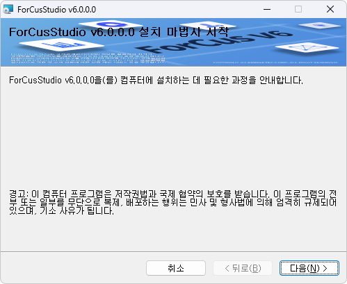

| ForCusStudio 설치 | 시작 다음 이전 |
ForCusStudio는 Setup 파일을 통해서 설치를 하게 됩니다.
ForCusStudioSetup_v6.x.x.x.msi
* .Net Framework 설치가 안되어 있는 경우 "setup.exe" 로 설치합니다.

설치를 완료하면 C:\Program Files (x86)\Bridgetec\ForCus\ForCusStudio v6.0.0.0\ 에 모든 파일들이 설치됩니다.
|
| Copyrights(C) Bridgetec.co.kr. All Rights Reserved | 시작 다음 이전 |